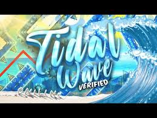
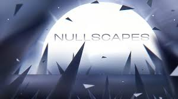
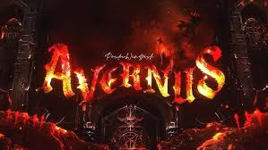
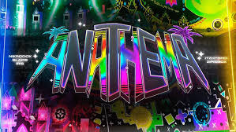
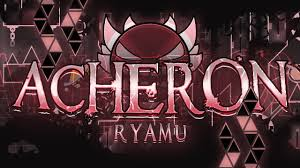

Este nivel es reconocido por su ritmo frenético y la necesidad de una precisión milimétrica en cada salto. Su diseño visual y musical lo convierten en un desafío icónico dentro de la comunidad.
Con una estructura compleja y transiciones inesperadas, Nullscapes exige una gran adaptabilidad y reflejos rápidos por parte del jugador.
Este nivel destaca por su atmósfera oscura y mecánicas innovadoras que desafían la coordinación y concentración del jugador.
Anathema es conocido por sus patrones impredecibles y la necesidad de una ejecución casi perfecta en cada sección.
Inspirado en Tartarus, Acheron lleva la dificultad a un nuevo nivel con sus complejas secuencias y obstáculos desafiantes.
| TIDAL WAVE BY ONILINK |  |
NULLSCAPES BY ITZKIBA |
 |
| AVERNUS BY POCKEWINDFISH |  |
| ANATHEMA BY NIKROPLAYS |  |
| ACHERON BY RIOT & RYAMU |  |
LINKS DE LOS VIDEOS AQUI ABAJO
https://www.youtube.com/watch?v=frjtBcNI6dI&pp=ygUKdGlkYWwgd2F2ZQ%3D%3D
https://www.youtube.com/watch?v=EztneTPp5CU&pp=ygUNbnVsbHNjYXBlcyBnZA%3D%3D
https://www.youtube.com/watch?v=JL30R7f-iBE&pp=ygUKYXZlcm51cyBnZA%3D%3D
https://www.youtube.com/watch?v=XYvhc8b_wb8&pp=ygULYW5hdGhlbWEgZ2TSBwkJjQkBhyohjO8%3D
https://www.youtube.com/watch?v=oh0FyZHZST8&pp=ygUHYWNoZXJvbg%3D%3D